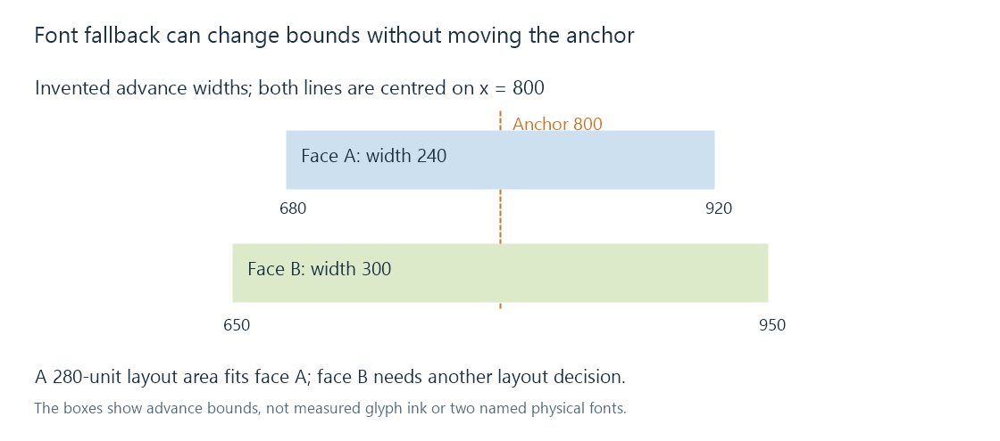

Subtitle font fallback
Subtitle font fallback selects usable faces when a requested font or required glyph is unavailable, which can change both shape and layout metrics.
Font fallback supplies a usable font face when the requested face or a needed glyph is unavailable. It lets a subtitle remain visible, but the replacement can change letter shapes, widths, baselines and line breaks.
Two different failures can trigger it:
| Situation | Typical matching question |
|---|---|
| Requested family is unavailable | Which available family/style is an acceptable substitute? |
| Family exists but lacks characters in a run | Which face covers those characters and suits their script? |
A renderer can therefore use fallback for part of a line rather than replace the entire caption.
The filename is not the selected family
Subtitle styles request font family and properties such as weight or italic style. The font's internal names and available faces supply that identity. A file named MovieFont-Regular.ttf need not contain a family named “MovieFont-Regular”.
Matching can consider family, style, character coverage, language and other properties. Fontconfig documents one such matching system; other platforms and renderers use their own font providers and policies.
Inspect the selected face rather than assume that the first vaguely matching filename must be the font being used.
A fixed anchor can produce different visible bounds
Imagine a line centred at x = 800. With face A, its advance width is 240 units. With fallback face B, it is 300.
| Face | Advance width | Left bound in this simplified model | Right bound |
|---|---|---|---|
| A | 240 | 800 − 120 = 680 | 920 |
| B | 300 | 800 − 150 = 650 | 950 |

The anchor did not move. The wider line extends farther in both directions. In a 280-unit-wide layout area, face A fits and face B does not, which can trigger wrapping or another layout decision.
These are invented advance-width values, not measurements of named fonts. Actual ink bounds can also differ from advance bounds, and shaping determines the advances used by a real line.
Coverage and shaping work together
A font can contain a base letter while a needed combining mark comes from another face. Coordinated shaping and placement must keep the mark related to the base. A substitution that changes metrics or separates a shaping run can alter the result.
Arabic and other contextual scripts also need appropriate shaping. Individual code-point coverage is useful, but not the complete test of connected forms or mark positioning.
A missing-glyph box is different from mojibake. The box can mean a known character lacked a drawable glyph. Mojibake can mean wrong characters were produced before the font provider was asked.
Resources belong to the active renderer
For an Emby comparison, identify where text is drawn and which face that renderer actually selected. A font attached to the source file must be made available at that consumer; a font installed on a separate machine does not automatically enter its matching process.
Retaining the intended face can improve repeatability of a typeset sign. Fallback remains useful for missing resources and coverage, while its metric differences explain why an unchanged style and position can still look different.